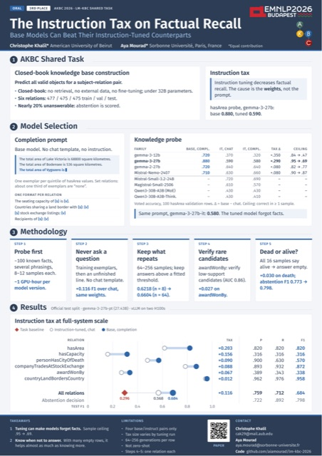
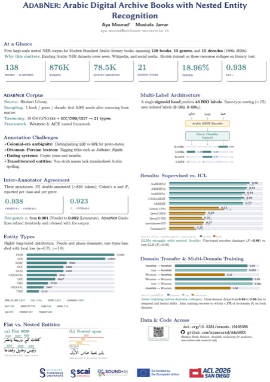

Aya Mourad
آية مرادNLP Researcher in information extraction and low-resource languages, Paris
I build information extraction methods and datasets for low-resource languages like Arabic: nested entities, relations and events across long documents, with modest compute and little labelled data.
- PhD researcher at Sorbonne Université, ISIR
- Open to consulting in NLP
- Fully funded by a Marie Skłodowska-Curie fellowship, SOUND.AI
Publications
-
The Instruction Tax on Factual Recall: Base Models Can Beat Their Instruction-Tuned Counterparts
AKBC 2026, co-located with EMNLP 2026, pp. 518–526

-
AdabNER: Arabic Digital Archive Books with Nested Entity Recognition
Proceedings of the 64th Annual Meeting of the ACL (Volume 1: Long Papers), pp. 33382–33396

-
A Large-Scale Analysis of COVID-19 Tweets in the Arab Region
Social Network Analysis and Mining, 12(1), 71
Teaching
Large Language Models
EmbeddingsTokenizationPrompt engineeringAI ethics
Graduate teaching assistant
Advanced Machine LearningArtificial IntelligenceWeb Programming & DesignComputer NetworksIntroduction to Programming
Professional Diploma in AI & Data Science
Machine LearningData ScienceDeep LearningIntroduction to Programming
Summer AI Academy 2024
AI fundamentalsMachine learning
All at the American University of Beirut.
Education and skills
Education
- PhD in Computer Science, Sorbonne Université2024–2027, ISIR · Marie Skłodowska-Curie Fellow
- M.Sc. Computer Science, American University of Beirut2019–2022, GPA 4.0
- B.Sc. Computer Science, American University of Beirut2012–2016
Schools and awards
- Deep Learning School 2025EFELIA Côte d’Azur, Sophia Antipolis, June–July 2025
- Google Cloud Research CreditsCompute award for Vertex AI experiments
- AUB Graduate Assistant FellowshipMerit-based, covering 100% of tuition
Skills
PythonPyTorchHugging Face TransformersPEFTvLLMLangChainTensorFlowOpenCVRAGDistributed trainingVertex AIGoogle CloudHPC / GPU clustersRC#SQLLaTeX
Languages
Arabic, nativeEnglish, full professional